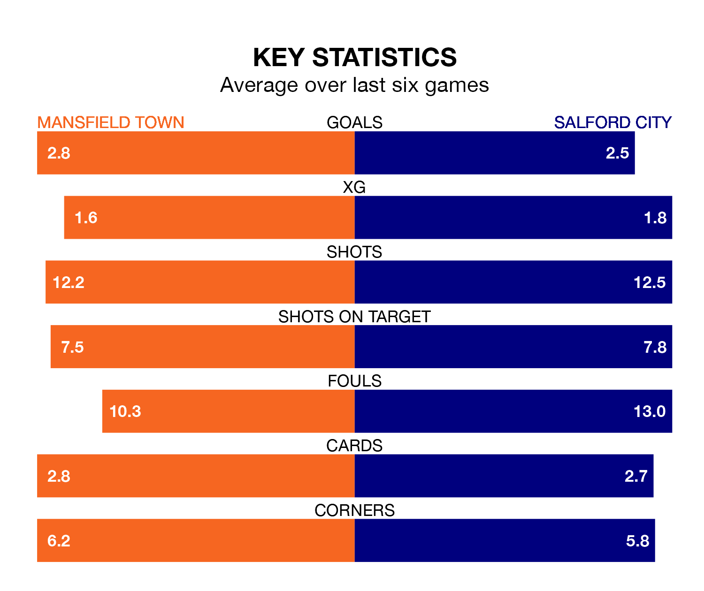

Mansfield Town host Salford City in Saturday's match at the One Call Stadium looking to bounce back from defeat last time out in EFL League Two.
The Stags, who sit second in the league after 32 games, fell to a 2-1 away defeat to Walsall on February 17.
They face a Salford side who picked up a win in their last match, a 5-3 victory against Barrow, and who sit 19th in the table.
With 62 goals in 32 games so far this season, Mansfield are the league's third-highest scorers with 1.9 goals per game. And they are conceding fewer than average, letting in 28 goals at a rate of 0.9 per game.
Salford, meanwhile, are average scorers, with 1.5 goals per game. They have conceded 1.8 goals per game.
In Christy Pym, Town can rely on one of the league's safest pair of hands. He has kept 12 clean sheets in his 32 appearances this season, and no 'keeper has prevented the opposition scoring more often in EFL League Two.
In City's net, Alex Cairns has seven clean sheets in 33 games. He has conceded a goal every 54 minutes, more than twice as often as the 111 minutes between goals for Pym.
In the last 10 years, Mansfield and Salford have played each other on eight occasions. Mansfield won three of them, Salford four, and they drew once.
On average, the Stags scored 1.4 goals and the Ammies 2.0 in those matches.
Their last meeting was on November 11, when Mansfield won 2-1 away.
The Stags are in mixed form in EFL League Two, with three wins and a draw from their last six games.
With three wins and three draws over that period, the Ammies' form is slightly better – they have taken 12 points from 18, compared to the hosts' 10.
Updated: 12:18 (UTC), 19/02/24